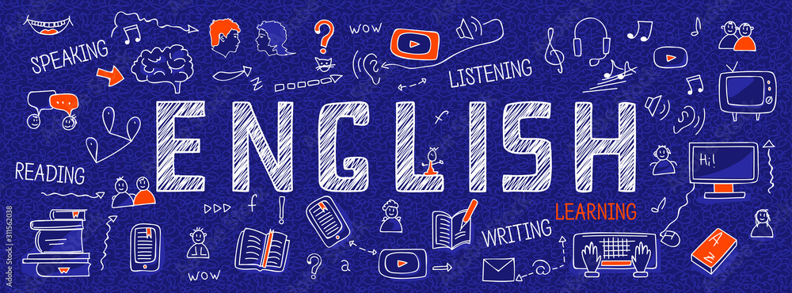

FLEX intervyu va testida, Harvard insholarida va SAT/ACT'da ingliz tili muhim rol o'ynaydi. Mana sizga yordam beradigan 65+ bepul manba — o'nta yo'nalish bo'yicha guruhlangan.

Har birini birdaniga boshlash shart emas — bittasidan boshlab, asta-sekin qo'shib boring.
Hech narsa topilmadi — boshqa so'z yoki kategoriya bilan urinib ko'ring.
Haftada bir marta 3 soat emas — har kuni 20–30 daqiqa samaraliroq.
Faqat manba ro'yxati yetarli emas — qanday mashq qilishni bilish ham muhim. Mana kanalda ilgari chiqqan uchta amaliy qo'llanma.
Ko'pchilik Speaking'da past ball oladi — sabab til bilmaslik emas, hayajon. Bu his "imtihon" deb fikrlashdan kelib chiqadi.
📚 Bonus: Beginner darajada o'qishni boshlash uchun "graded readers" (soddalashtirilgan darajali kitoblar) juda yordam beradi — masalan Macmillan Readers yoki Penguin Readers seriyasidagi The Elephant Man, Sherlock Holmes hikoyalari, Rich Man, Poor Man kabi nomlar. Bunday kitoblarni onlayn kutubxonalardan yoki rasmiy nashriyot ilovalaridan qidiring; tavsiyalar uchun Telegram kanalga yozing.
Ingliz tili testi va intervyu bosqichlariga qanday tayyorlanish haqida to'liq qo'llanma.
O'qish → Insho va testSAT/ACT va insholarda kuchli ingliz tilining ahamiyati haqida.
O'qish → Ko'proq maslahatKanaldagi qo'shimcha maslahatlar va tajriba yozuvlari.
O'qish →